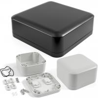

Project template containing the recommended board layout for Hammond Manufacturing 1557D:
Gray: 1557DGY - 164-1557DGY-ND
Black: 1557DBK - 164-1557DBK-ND
Gray: 1557DAGY - 164-1557DAGY-ND
Black: 1557DABK - 164-1557DABK-ND
|  |
|
The "Dwgs.User" layer contains all critical dimmensions in milimeters[inches].
The "Edge.Cuts" layer contains the maximum board outline and holes to align with board standoffs.
PCB Preview: